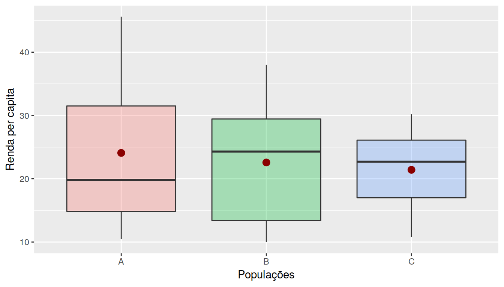

6 Como detectar a sazonalidade ?
Visualmente
- Boxplots
- seasonplot
- monthplot
- decomposição
Testes Estatísticos (ex: Kruskall-Wallis)
6.1 Ciclo
- Aumento ou redução de frequência sem intervalos fixos

- A série pode ser descrita como sendo a soma dos componentes: tendência, sazonalidade, ciclicidade e termo aleatório.
\[Z_t = T_t + S_t + C_t + a_t\]
sendo \(t = 1,2, ..., N\)
- Se a sazonalidade varia em conjunto com a tendência (aumenta de amplitude quando aumenta a tendência), o modelo melhor é multiplicativo, que pode ser transformado em aditivo usando \(log\).
\[Z_t = T_t . S_t . \varepsilon_t\]
\[log(Z_t) = log(T_t) + log(S_t) + log(\varepsilon_t)\]
Removendo as componentes \(T\) e \(S\), supõe-se que sobra ?
Ruído branco;
cada \(\varepsilon_t\) é “determinado” pelo \(\varepsilon_{t-1}\) - modelo AR
a variância de \(\varepsilon_t\) é “determinada” por \(\varepsilon_{t-1}\) - modelo MA
6.2 Tendência e sazonalidade
Estimar a tendência ou a sazonalidade:
ajustar polinômio, curva exponencial ou reta (paramétrico);
suavizar (filtros - não paramétricos);
diferenciar.
Diferenças:
pode-se diferenciar tantas vezes quanto necessário até estabilizar (não + que duas diferenças);
para sazonalidade usa-se diferenciação com período igual ao da sazonalidade.
\[\Delta_{s} Z_t = Z_t - Z_{t-s}\]
sendo \(s\) é o período da sazonalidade.
A série pode ser descrita como sendo a soma dos componentes: tendência, sazonalidade, ciclicidade e termo aleatório.
\[Z_t = T_t + S_t + C_t + a_t\]
sendo \(t = 1,2, ..., N\)
- Se a sazonalidade varia em conjunto com a tendência (aumenta de amplitude quando aumenta a tendência), o modelo melhor é multiplicativo, que pode ser transformado em aditivo usando \(log\).
\[Z_t = T_t . S_t . \varepsilon_t\]
\[log(Z_t) = log(T_t) + log(S_t) + log(\varepsilon_t)\]
Removendo as componentes \(T\) e \(S\), supõe-se que sobra ?
Ruído branco;
cada \(\varepsilon_t\) é “determinado” pelo \(\varepsilon_{t-1}\) - modelo AR
a variância de \(\varepsilon_t\) é “determinada” por \(\varepsilon_{t-1}\) - modelo MA
Estimar a tendência ou a sazonalidade:
ajustar polinômio, curva exponencial ou reta (paramétrico);
suavizar (filtros - não paramétricos);
diferenciar.
Diferenças:
pode-se diferenciar tantas vezes quanto necessário até estabilizar (não + que duas diferenças);
para sazonalidade usa-se diferenciação com período igual ao da sazonalidade.
\[\Delta_{s} Z_t = Z_t - Z_{t-s}\]
sendo \(s\) é o período da sazonalidade.